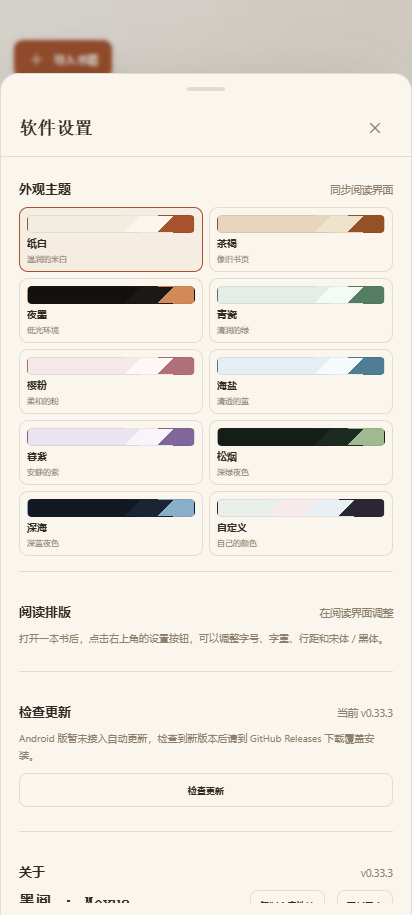

沉浸阅读
默认隐藏工具栏，正文占满屏幕。轻点中间呼出菜单，左右两侧翻页。
书架、书城、目录、书签和划线笔记都带到了手机。左右滑动或点屏幕两侧翻页， 轻点正文中间收起工具栏，底部抽屉可以下拉关闭。
Android 7.0+ · arm64 · 约 46 MB · debug 签名测试包。安装时请允许「未知来源」； OSS 镜像因阿里云限制为压缩包，解压后安装。
默认隐藏工具栏，正文占满屏幕。轻点中间呼出菜单，左右两侧翻页。
书架分类、在线书城、公版书，导入 EPUB / TXT / PDF / MOBI / AZW3。
目录定位当前章节，书签、划线和笔记都按书保存，随时跳回原文。
今天读多久、读了多少页、连续阅读天数，都在本机记录。
翻页方式、纸张、字体、字号、行距和第二天的阅读进度都在设置里。 抽屉可以从顶部把手向下拖动关闭，不会打断阅读。

点上面的 GitHub 按钮直接下载；OSS 是压缩包，解压后得到 APK。
Android 会提示来源未知，进入设置允许浏览器或文件管理器安装应用。
导入本地书，或者去书城找一本；阅读进度只保存在这台手机上。
有，而且和手机版是两个独立网站。电脑版在 这里， 支持 Windows 10 / 11、本地音乐和离线听书。
手机版第一版先聚焦阅读和书城，暂不包含本地音乐、离线听书和自动更新。
设置里可以手动检查更新，下载新 APK 覆盖安装；书籍、进度和笔记会保留。
目前的 APK 使用 debug 签名，适合试用，不适合上架商店。安装时选择「仍要安装」即可。